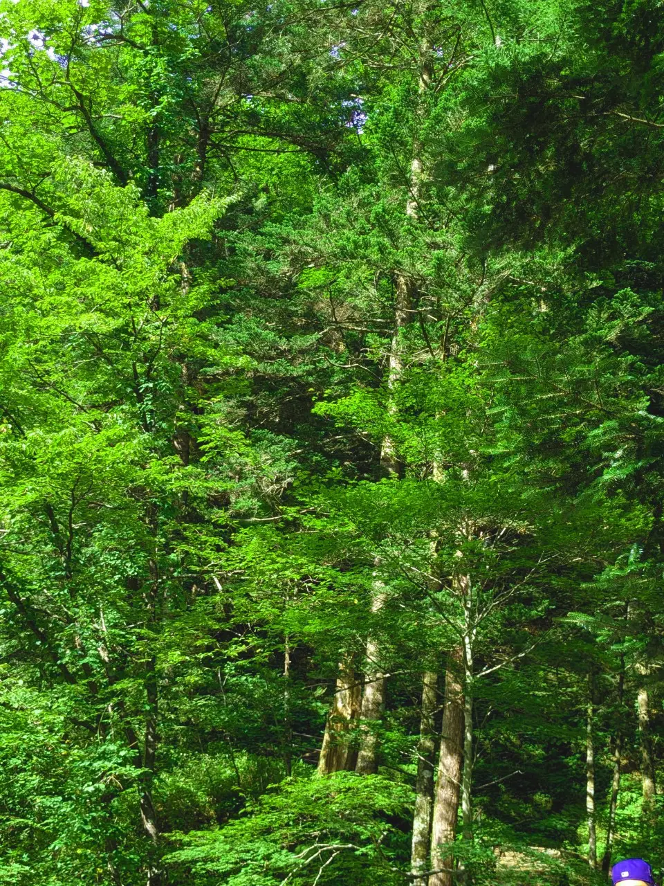
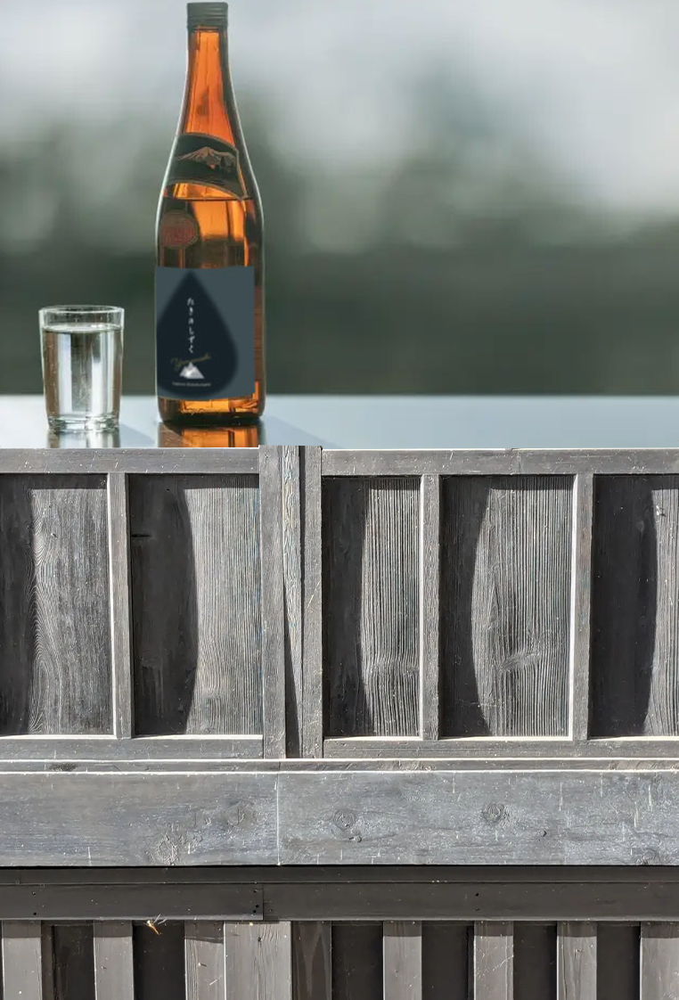
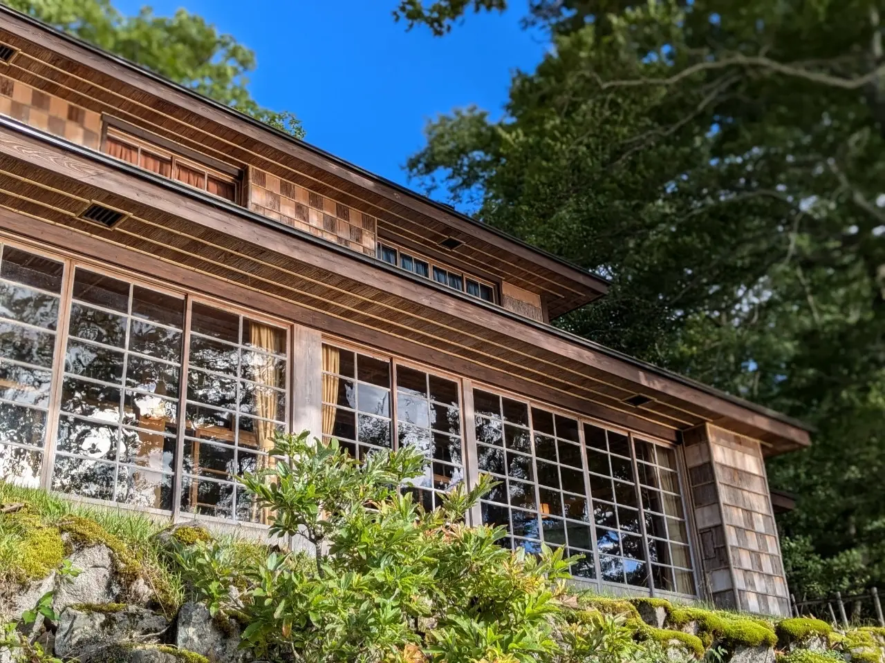
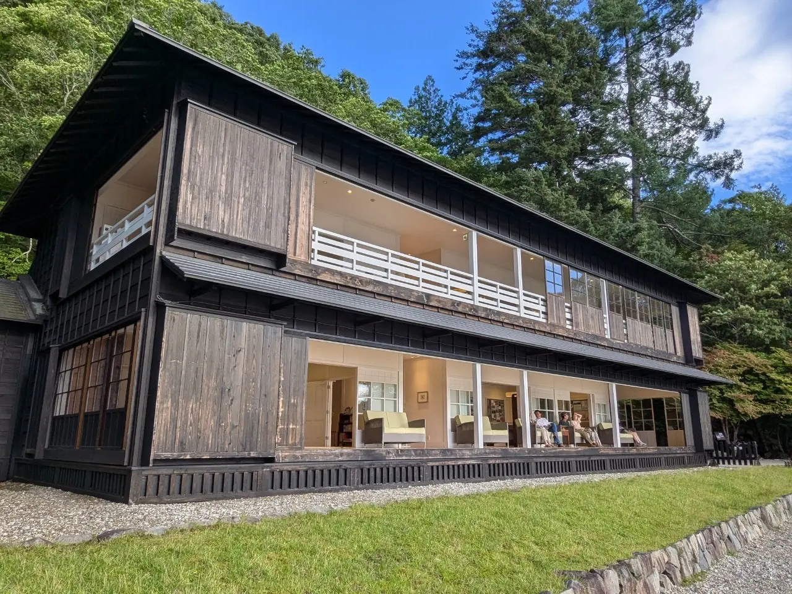
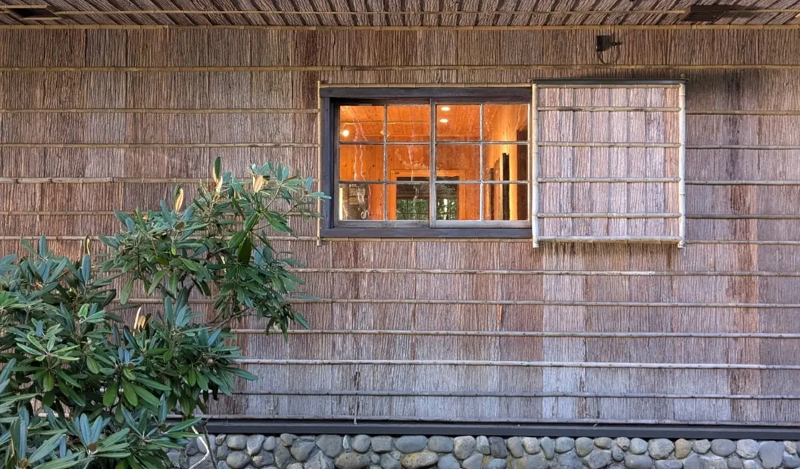

たきのしずく



奥日光の雄大な自然に抱かれた蔵で、
私たちは伝統的な酒造りを守り続けています。
清らかな水と選び抜かれた米、そして熟練の技が織りなす日本酒は、
まるで滝から生まれた雫のように澄みきっています。
『たきのしずく』は、自然の恵みと人の想いが一つになった、至極の日本酒です。


『たきのしずく』は、みずみずしい梨のような爽やかな香りと、
奥深い味わいが特徴です。
口にした瞬間、口の中に広がるのは、まるで果実を頬張ったような芳醇な香り。
そして、後味には米の旨みがじんわりと広がります。
食中酒としても、ゆっくりと味わいたい時にもおすすめです。
この度、『たきのしずく』では、夏の限定酒『yamanashi』を発売いたします。
少し青い香りの残るやまなしのような爽やかな香りと、きりっとした口当たりが特徴です。
ぜひ、この機会にご賞味ください。
『たきのしずく』の醸造元では、蔵見学を受け付けております。
日本酒ができるまでの工程を、五感で体験いただけます。
皆様のお越しを心よりお待ちしております。

中禅寺湖を望む、森の中に醸造所はあります。

